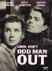
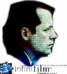
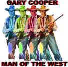
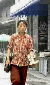
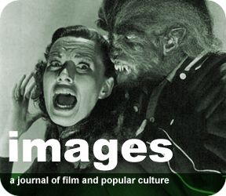

DVD Alerts provides announcements of recommended films set for DVD release. Check back frequently for many announcements of recommended DVDs. Dates in parenthesis are scheduled releases.
August 16, 2002
One the movies that got waylaid in the wake of 9/11, Big Trouble (10/8/02) is an off-the-wall comedy that won't make everyone happy. Still, the dark humor often explodes with laughs. Dennis Farina's a hoot and director Barry Sonnenfeld hits the mark more often than not. Coming from Buena Vista.
Master of the contemporary French mood piece Eric Rohmer travels to the French Revolution for the romantic drama The Lady and the Duke (10/1/02). Subtitled but of course.
Taking on the film within a film, Man Bites Dog (9/24/02) is a twisted thriller horror movie from Belgium. Nasty fun with a bitter aftertaste from this 1992 black and white flick.. Laugh if you dare. Anamorphic 1.66 enhanced for 16 x 9 from Criterion. Some extras including a student film. English subs.
Kathryn Bigelow brings a horrifying stylishness to the 1987 horror flick with Near Dark (9/10/02). Vampire zombies wander through the dust of middle America seeking to satisfy their blood lust. Lance Henriksen and Bill Paxton star in this Anchor Bay special edition. The 2-disc set includes audio commentary and an original documentary.
The art of the con gets a Argentine treatment in Nine Queens (10/01/02) from director Fabian Bielinsky. Starring Ricardo Darin as a smooth grifter. From Columbia Tristar. Anamorphic 1.85 enhanced for 16 x 9. In Spanish with English subs.
Alfred Hitchcock's 1945 black and white suspensor Spellbound (9/24/02) gets a Criterion release. The special edition includes commentary from Hitchcock scholar Marian Keane, an illustrated essay on the Dali dream sequence, and a Lux Radio Theatre adaptation.
Powerful dose of family drama from Italian director Nanni Moretti, The Son's Room (10/8/02) examines the tragedy of one family. Buena Vista releases in a 1.66 anamorphic enhanced for 16 x 9 transfer.
Another twist on a family in crisis, the 1964 Seance on a Wet Afternoon (9/24/02) stars Kim Stanley as a mother dealing with loss and Richard Attenborough as her husband. Bryan Forbes directs the powerful black and white film. From Home Vision in 1.66 anamorphic enhanced for 16 x 9.
August 14, 2002
Code-breaking anyone? Enigma(9/24/02), Michael Apted's World War II cerebral action flick debuts on DVD from Columbia as a special edition including commentary from erudite director Apted. Kate Winslet and Jeremy Northram star.
The highly regarded Y Tu Mamá También (10/22/02) directed by Alfonso Cuarón gets the special edition treatment from MGM. In addition to Cuarón's commentary, there are deleted scenes and a making of documentary. English subs.
Don't lose sleep over the treatment Insomnia (10/15/02) will get on DVD. Director Christopher Nolan's adaptation of the outstanding 1997 Swedish film is being released by Warner with full special edition treatment including commentary from Nolan and lots more.
July 25, 2002
Beauty and the Beast 10/8/02) (is promised from Disney in an all new digital edition that should look better than the beast ever did on video. Lots of special edition surprises too. Will this be upping the ante on a classic animation?
Miramax is re-releasing The Grifters (9/24/02) as a special edition including audio commentary from director Stephen Frears, writer Donald Westlake and stars John Cusack and Angelica Huston. A "making of" and more. If you haven't caught this tough flick on your DVD line, now the chance to reel in the 1993 film.
Walter Matthau is an ex-CIA agent on the run in Hopscotch (8/20/02) coming from Criterion. The 1980 film directed by Ronald Neame co-stars Glenda Jackson in pithy form.
Son of the Bride (9/10/02) is an elegant 2001 film from Argentina starring charismatic Ricardo Darín and directed by Jose Luis Campanella. Columbia releases.
Angels Over Broadway (8/20/02) debuts on DVD from Columbia. Rita Hayworth stars alongside Douglas Fairbanks, Jr. in this 1940 black and white drama.
David Fincher's excellent claustrophobic thriller Panic Room (9/17/02) lands on DVD from Columbia. Jodie Foster stars as a Mom bent on survival.
June 14, 2002
Paul Schrader's Cat People (8/27/02), the ever-so stylish remake of the classic horror movie, gets special edition treatment from Universal. The 1982 film starring Natasha Kinski and Malcolm McDowell features a DVD audio commentary from Schrader as well as other feline tidbits.
Two Elvis Presley westerns debut on DVD from Fox. The 1960 Flaming Star (8/13/02) co-stars Barbara Eden. Love Me Tender (8/13/02), Presley's 1956 debut film co-stars the beautiful Debra Paget. Both delivered from Fox anamorphic widescreen.
June 4, 2002
That strange and often wonderful film, Ed Wood (8/13/02), examining the career of cult filmmaker of the title, stars Johnny Depp and Martin Landau. Buena Vista is releasing the 1994 film in a special edition featuring Audio Commentary with Director Tim Burton, Actor Martin Landau. Anamorphic 1.85 enhanced for 16 x 9 in beautiful black and white.
Man of the Century (8/6/02) sounds like an interesting Indie flick. Newsman Johnny Twennies doesn't fit in the modern Manhattan scene. A black and white special edition from Image. Audio Commentary with Star and Co-Writer Gibson Frazier; Behind-the-Scenes Featurette. Anamorphic 1.85 enhanced for 16 x 9.
A very well made film from a Stephen King book, the 1993 Needful Things (8/27/02) is directed by Fraser Heston. Good cast, great atmosphere. Anamorphic 1.85 enhanced for 16 x9 from MGM.
Keep a night light blazing in the kids' rooms. Monsters, Inc( 9/17/02) bows on DVD from Buena Vista is a special edition including audio commentary.
The Alec Guinness Collection (9/10/02) arrives from Anchor Bay including Kind Hearts and Coronets (1949), The Ladykillers (1955), The Lavender Hill Mob (1951), and The Man in the White Suit (1951). Let's pray that some decent source elements were found for these classic British comedies.
Richard Lester's 1976 Robin and Marian (7/16/02) doesn't get enough respect. Sean Connery and Audrey Hepburn make a great pair late autumn lovers. Coming from Columbia Tristar. Anamorphic 1.85 enhanced for 16 x 9.
May 30, 2002
Brace yourself for the all-out onslaught of We Were Soldiers (8/6/02). Probably Mel Gibson's finest screen performance, the Vietnam film from writer/director Randall Wallace (Braveheart). Paramount delivers the assault as a special edition featuring audio commentary and more. Anamorphic widescreen 2.35 enhanced for 16 x 9.
Denzel Washington turns it on as a father on the edge. Are there any limits to what he will do to protect his son? Nick Cassavetes directs John Q (7/16/02) in this special edition DVD from Warner featuring audio commentary from the director and deleted and altered scenes.
Lord of the Rings: The Fellowship Of The Ring (8/6/02) arrives in a packed special edition from Warner. Spectacular production design should translate to reference DVD images. 3 in-depth programs that reveal the secrets behind the production of this epic adventure, 15 featurettes, and interviews with cast members. Exclusive 10-minute behind-the-scenes preview of the next The Lord of the Rings theatrical release, "The Two Towers."
The tough 1997 neo-noir from writer/director Quentin Tarantino, Jackie Brown (8/20/02) gets the special edition treatment from Buena Vista. Pam Grier and Robert De Niro lead the way. The 2 DVD-Set includes "How It Went Down: A Look Back" Feature; "Chicks With Guns" Feature; Deleted Scenes with Quentin Tarantino's Introductions; Trailers, and Extensive Interviews. Anamorphic widescreen 1.85 enhanced for 16 x 9.
Swingers (9/24/02) is hip and slick and often wickedly funny. Starring Jon Favreau and Vince Vaughn from director Doug Liman. Special edition delivery from Buena Vista.
A second visit to Quentin Tarantino's fine 1994 Pulp Fiction (8/20/02) gets special edition treatment from Buena Vista. It's a 2 DVD set featuring a behind the scenes featurette, deleted scenes, and interviews with the players. Anamorphic widescreen 2.35 enhanced for 16 x 9.
I keep saying Ashley Judd in anything. High Crimes (8/27/02) is better than just anything with excellent support from Morgan Freeman. Carl Franklin adds incisive direction. Commentary by Carl Franklin; Commentary by Morgan Freeman and Ashley Judd; Trailer; Seven featurettes; Storyboard to scene comparison. Fox delivers the special edition anamorphic widescreen enhanced for 16 x 9.
May 23, 2002
Peter Jackson's insightful and chilling tale of two young woman trying to adjust to the world finally gets a DVD release from Buena Vista. Based on a true story, the 1994 Heavenly Creatures (9/24/02) stars Kate Winslet. Anamorphic widescreen 2.35 enhanced for 16 x 9. Too bad it's not a special edition since there's very controversial and rich material to ponder, but Mr. Jackson will be buried under the awesome task of a three Ring project for some time to come.
Charlotte Gray (7/9/2002) gets dressed in special edition garments by Warner. Gillian Armstrong's 2002 visually beautiful World War II melodrama stars the incandescent Cate Blanchett and a very effective Billy Crudup as a French underground fighter. Extras include Audio Commentary by Gillian Armstrong; Trailer; Cast/Crew Film Highlights; Relive the Era's Excitement with 2 Documentaries: "A Village Revisits History" and "Living Through Wartime" (featuring Cate Blanchett and Gillian Armstrong).
John Hughes' 1986 fuzzy sweet teen pic Pretty in Pink (8/20/02) curtsies onto DVD courtesy of Paramount. Molly Ringwald, Andrew McCarthy and Jon Cryer get center stage. Anamorphic widescreen enhanced for 16 x 9 1.85.
Getting a second chance in life, high school baseball coach Jim Morris pitches into the bigs in The Rookie (8/27/02), based on a true story. Debut directing credit for talented screenwriter John Lee Hancock. Dennis Quaid pitches strikes in this special edition from Buena Vista. Audio Commentary by Dennis Quaid and John Lee Hancock; Deleted Scenes Introduced by John Lee Hancock; "The Inspirational Story of Jim Morris" - Meet the Real Rookie; Spring Training: Tips from the Pros.
Time travel with panache! Time After Time (8/6/02), the 1979 thriller from director Nicholas Meyer inspired by the work of H. G. Wells gets special edition treatment from Warner. Anamorphic widescreen 2.35 enhanced for 16 x 9. Audio Commentary by Malcolm McDowell, David Warner and Nicholas Meyer; Trailer; Cast film highlights
After seeing the 1954 scifi horror flick Them (8/6/02), some of us city folk refused to go anywhere near picnic country. Watch out for giant ants, a bi-product of the atomic age. James Whitmore steps in to step on the ants. Black and white Fullscreen 1.33 from Warner.
A slick, chilling horror film with a hint of wolf bane, 1981's Wolfen (8/6/02) is being released on DVD by Warner in a special edition featuring Audio Commentary by Albert Finney, Diane Venora, Gregory Hines and Edward James Olmos. Anamorphic widescreen 2.35.
Another Akira Kurosawa treasure, Red Beard (7/16/02) debuts on DVD from Criterion in an anamorphic widescreen 2.35 presentation. The black and white film is the final collaboration of Kurosawa with star Toshiro Mifune. One of Kurosawa's humanist oeuvre.
Peddling onto DVD from Columbia is the small Chinese film Beijing Bicycle (7/9/02). Another lovely film from the Orient to be cherished on DVD. Anamorphic widescreen 1.85.

Selections from the Feature
Archive include articles on Akira Kurosawa, Frank Darabont, Blonde Bimbos, Hollywood Street Gangs, or Vietnam: The Hollywood Pariah, and many
more....
Puttin on the Ritz
Fred Astaire and Cyd Charisse bring Silk Stockings to life, a remake
of Ninotchka, one of many films successfully turned into musicals by the
Hollywood dream factory. Read all about remakes into musicals by
clicking on the divine dancers.
The
Bitch Brigade

A line-up of lean-lipped
actresses who marched through Hollywood in a high heeled goose step
armed with razor sharp dialogue. Click on the image to read all about
them.

ISF Monitor
Calibrations in the Tristate New York area. Lots of hardware info
and frequent hardware peaks from video expert Kevin Miller. They may be
judgmental, but that's the point, isn't it. Lots of DVD reviews plus
news and more.
Comprehensive DVD review
database. Easy to use interface with specific region searches.
Timely DVD reviews and an easy-to-use
interface. Weekly contests.
Glenn Erickson's insightful DVD reviews have been a Internet fixture for
several years. Check out some of his sophisticated feature articles.
Currently hosted by DVD Talk.
One of the prime resources for DVD information: rumors, reviews and news.
Formerly Best Bets on Laser. And so it goes.

The National Film
Preservation Foundation (NFPF) is
the nonprofit organization created by the U.S. Congress to save
America's film heritage.
An elegantly presented fan site dedicated to one of Hollywood's great
action stars.

The Movie Poster Archive includes extensive poster images from the films of stars like Susan Hayward, Kirk Douglas, Katharine Hepburn and many more. Our featured star is Lana Turner.

Jou Du/A,B-
A sexy Chinese noir. Bold colors paint
stirring emotions in a small provincial town.
Odd
Man Out/B+,B 
This straight-forward IRA tale takes on dream-like qualities under the
polished direction of Carol Reed. Stunning images and an amazing James
Mason performance.

Selections from the Feature Archive
include articles on Akira Kurosawa, Frank Darabont, Blonde Bimbos, Hollywood Street Gangs, or Vietnam: The Hollywood Pariah, and many
more....
Capturing
Kennedy 
Steven Culp extracts the essence of Robert F. Kennedy in Roger
Donaldson's outstanding feature Thirteen
Days. Culp recently shared insights on the performance and his
career with Films on Disc. Click the image for more.

Screen legend Gary
Cooper won two Academy Awards© as Best Actor during a career that
included 114 Hollywood films. Click on his image for a bio and poster
images.

Not One Less

DVD Demystified makes it all clear. The
official Internet DVD FAQ for the rec.video.dvd Usenet newsgroups.

The official site for information about the great comic director. A
treat for connoisseurs of classic Hollywood madcap.

Images is a non-commercial Web site created for everyone who enjoys
movies and popular culture. Images is published quarterly; however, new
reviews will appear each week, so check back often.